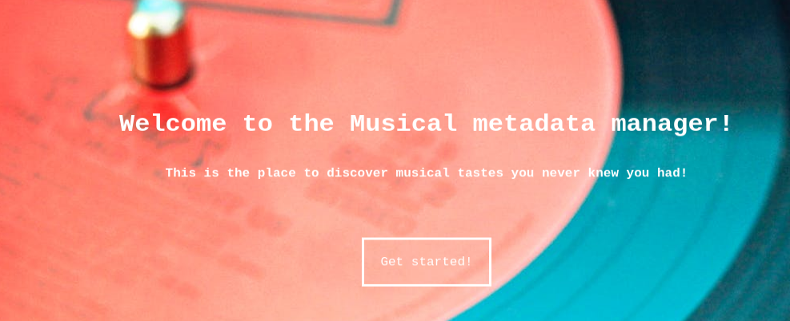
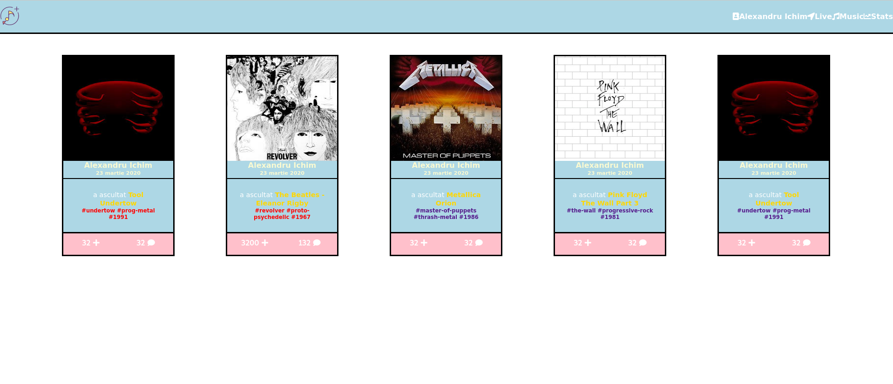
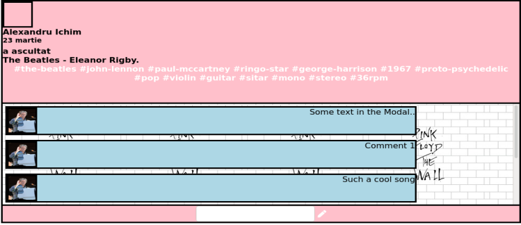
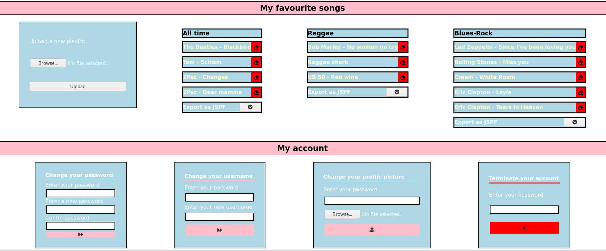

Documentatia aferenta interfetei aplicatiei MuM
O trecere in revista a caracteristicilor aplicatiei
Universitatea "Alexandru Ioan Cuza", Iasi, Facultatea de Informatica
IS
Introducere
Aplicatia MuM, dezvoltata de echipa formata din Stefan Palalae si Alexandru Ichim, are rolul de a agrega metadate muzicale, preluate din diferite surse web, intr-un sistem ce ofera utilizatorilor acestuia posibilitatea de a vizualiza preferintele muzicale ale prietenilor lor si de a fii la curent cu ultimele auditii muzicale si aparitii de albume si cantece. Sistemul isi duce la bun sfarsit menirea utilizand diverse mecanisme ale ecosistemului web, printre care apelarea api-urilor externe, ale unor entitati precum Spotify sau Last.fm, si feed-urile rss, utilizate pentru a tine la curent utilizatorii cu minim de efort din partea acestora.
Landing page
Prima interactiune a utilizatorului cu aplicatia web MuM se va face prin intermediul landing page-ului prezentat mai jos. Prin apasarea butonului "Get started", utilizatorul initiaza o cerere pentru pagina de inregistrare. 
Login si Register
Utilizatorul neautentificat, pentru a putea beneficia de toate facilitatile oferite de aplicatia web, se poate autentifica folosind formularul paginii web Login sau se poate inregistra in baza de date, in cazul in care nu detine un cont.
News-feed
In sectiunea news-feed a aplicatiei, utilizatorul poate vizualiza ultimele auditii muzicale si ultimele
actualizari ale bazei de date de productii a sistemului. Utilizatorul autentificat poate aprecia si
adauga un comentariu la oricare dintre activitatile
reprezentate in news-feed. Utilizatorul neautentificat are doar posibilitatea de a viziona un news-feed
generalizat.

.
Sectiunea de comentarii
Un utilizator autentificat poate lasa un comentariu la oricare dintre activitatile consemnate si reprezentate in news-feed. Owner-ul activitatii dar si al comentariului pot elimina, ulterior, comentariul in cauza. 
Sectiunea de administrare a propriului cont
Un utilizator autentificat are acces la doua tipuri de activitati prin intermediul paginii de administrare a propriului cont: in primul rand, poate importa in sistem si exporta din acesta playlist-uri in format JSPF. In al doilea rand, acesta se poate angaja in diverse activitati de administrare a propriului cont: isi poate schimba parola, numele de utilizator, poza de profil si in ultimul rand, isi poate radia contul din baza de date. 